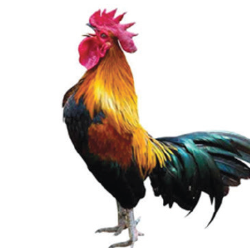
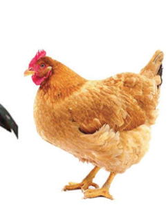
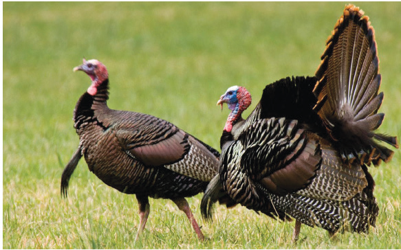
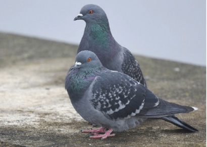
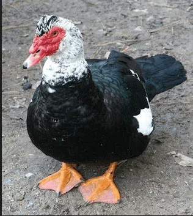
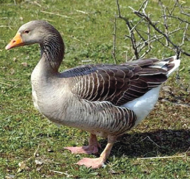
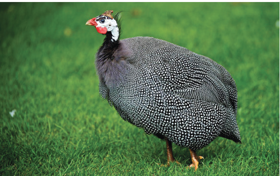

Chapter Nine
Introduction to poultry production
Introduction
In this chapter, you will learn the meaning and importance of poultry production. You will also learn about poultry farming systems and factors to consider in selecting a poultry production system. The competencies developed from this chapter will enable you to explore and appreciate a wide range of entrepreneurial opportunities existing in the poultry sector. You will also be able to make informed decisions in adapting a poultry rearing system which suits your needs.
The meaning and importance of poultry production
At your home, school or community, you may have seen various birds as shown in Figures 9.1 (a) - (f). In the coming activity, you will explore various things about those birds as well as other birds which are not shown in the figures.






